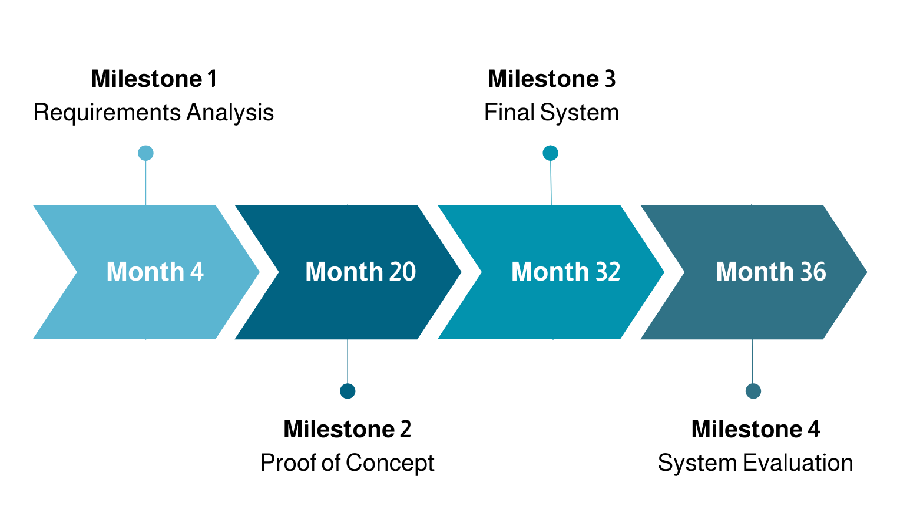

Timeline and Milestones
Project Duration: January 2025 - January 2028
The project spans 36 months and includes the following milestones:

- Milestone 1 (Month 4): Requirements analysis
- Milestone 2 (Month 20): Proof of concept – Basic CRIMA system with impact chain modeling and limited query capabilities
- Milestone 3 (Month 32): Final system – Complete VKG integration, full user interface, ready for pilot scenarios
- Milestone 4 (Month 36): Evaluation of system through stakeholder testing and demonstration